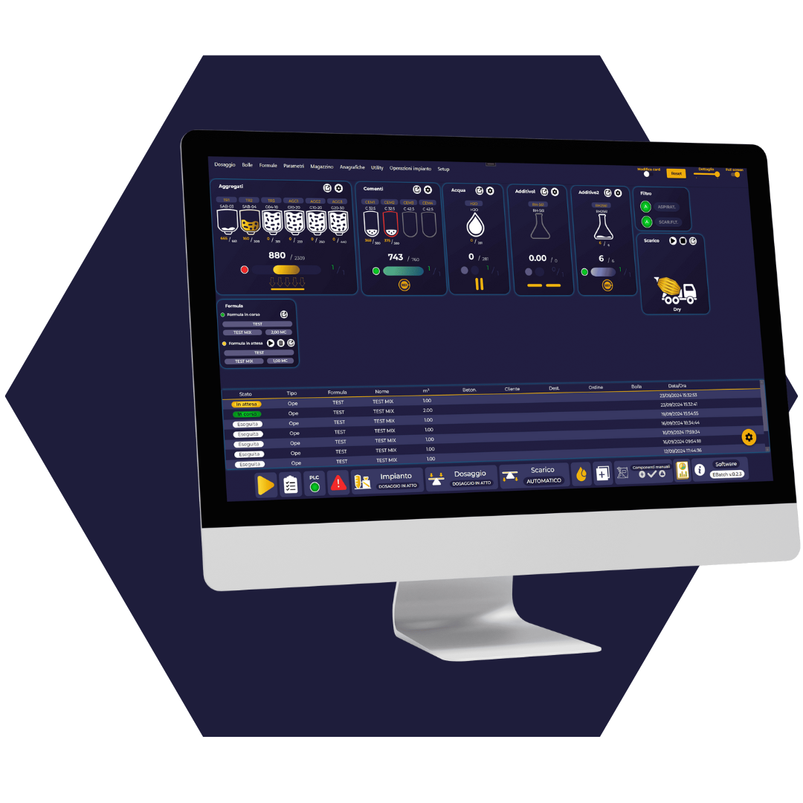
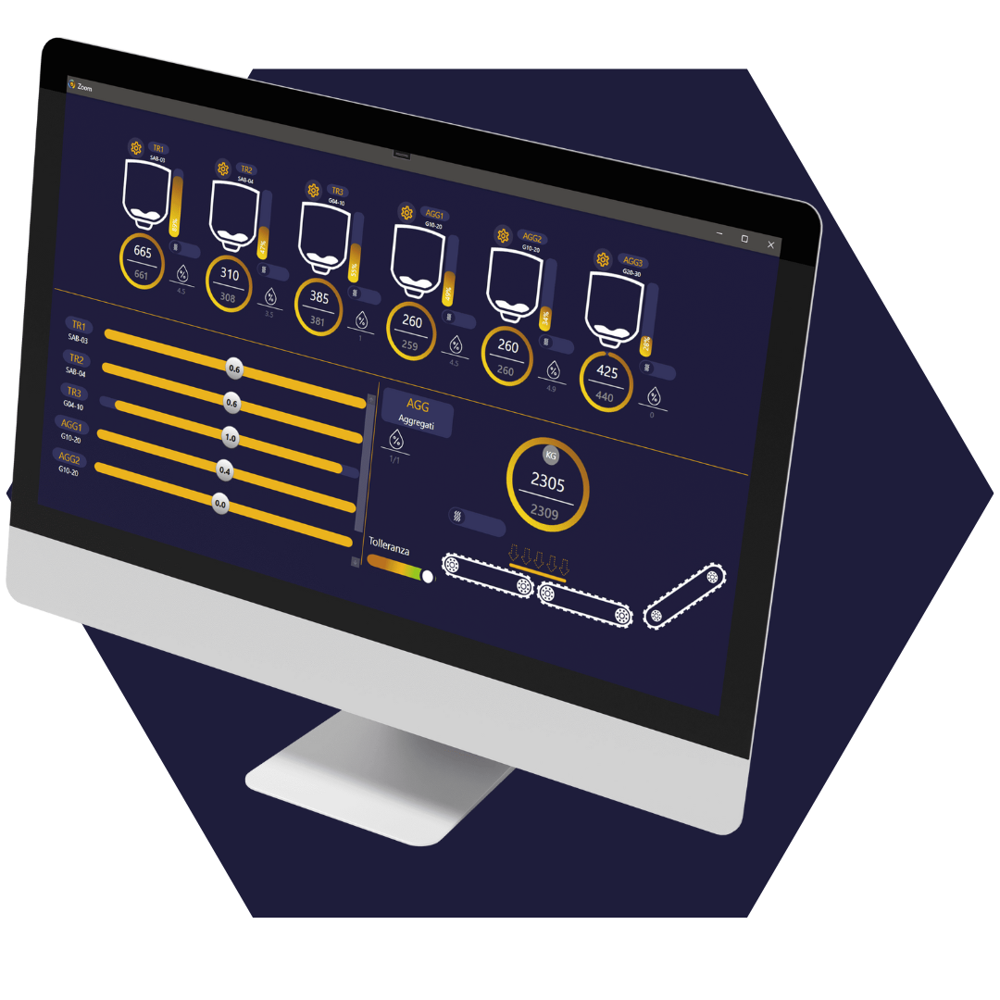

Efficente intuitivo ed evoluto, e-BATCH è un software all’avanguardia per l’automazione e la gestione centralizzata dei sistemi di pesatura e dosaggio dei materiali. Caratterizzato da un’interfaccia moderna e chiara, è scalabile, modulare e aperto a connettersi con qualunque altro sistema per scambiare dati e informazioni.

PUNTI DI
FORZA
- Rilevazione delle emissioni di CO2 per ogni m3;
- Efficienza energetica con criteri di spegnimento dei motori quando non necessari;
- Risparmio energetico e massimizzazione della produzione con dati del ciclogramma;
- Funzionalità del software sia per impianti nuovi sia per retrofitting;
- Manutenzione preventiva e gestione ordini integrata;
- Maggiore velocità di dosaggio con immutata precisione;
- Predisposizione per l’integrazione in rete e l’interfacciamento con software gestionali, dispatch e di laboratorio;
- Sistema di controllo qualità del prodotto;
- Informazione a portata di click.
